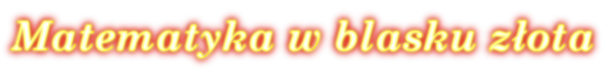
Wprowadzenie
Witam!
Nazywam się Konrad Szlagor, jestem uczniem III klasy Technikum, o profilu informatycznym, w Powniatowym Zespole Nr 10 Szkół Mechaniczno-Elektrycznych im. Mikołaja Kopernika w Kętach.
Współczesny świat, chyba bardziej niż kiedykolwiek, opiera się na liczbach. Mnie (tak jak i zapewne wielu) zafascynowała tzw. liczba φ, dzięki której wchodzimy w złotą matematykę. Jak sama nazwa wskazuje to zaskakująca i wyjątkowa część matematyki. Na ten temat powstało wiele ciekawych książek i prac. Wybrałem tylko małą cząstkę "złotych przygód", aby zainteresować Państwa, rozbudzić wyobraźnię i chęć dalszego poznawania tego działu matematyki.
Złoty podział
Co wspólnego mogą mieć zjawiska przyrody tak pozornie od siebie odległe, jak ułożenie ziaren w słoneczniku, elegancka spirala skorupy ślimaka czy kształt galaktycznej Drogi Mlecznej? Jakie uniwersalne prawo geometryczne kryje się w pracach wielkich artystów i architektów, od Witruwiusza do Le Corbusiera,od Lenarda do Salvadora Dali? To bardzo zaskakujące bo odpowiedzią na oba te pytania jest po prostu liczba φ.Zyskała sobie ona miano "złotej proporcji","złotej liczby","złotego stosunku","boskiej proporcji". Pokazać jej w druku nie można i to nie dlatego, że jest wielka - niewiele przekracza 1 - lecz dlatego, że jej zapis wymaga nieskończonego ciągu cyfr w którym nie widać żadnej powtarzającej się regularności
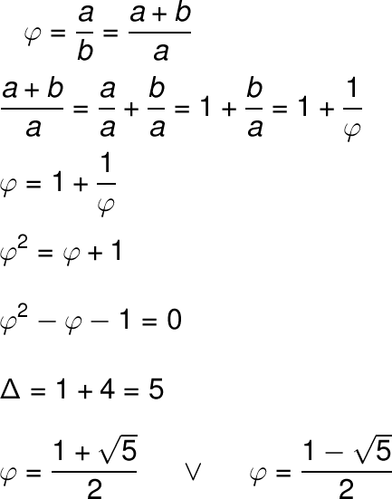
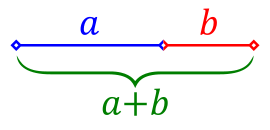
Rozwiązując równanie pierwsze otrzymujemy liczbę 1,618033988749894 i jest to nasza "złota liczba"(drugie równanie nie jest nam potrzebne, ponieważ równanie dotyczy odcinka, a jego długość jest większa od zera)
Złoty Trójkąt
Trójkąt równoramienny, w którym stosunek boku do podstawy jest równy liczbie φ nazywamy złotym trójkątem. Obydwa kąty przy podstawie tego trójkąta mają po 72°, a kąt wewnętrzny wierzchołka naprzeciwko podstawy wynosi 36°.
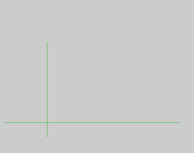
Konsrukcja złotego trójkąta:
Rysujemy odcinek AB i wyznaczamy jego środek w punkcie C.
Z punktu A rysujemy łuk o promieniu AB.
Z punktu C rysujemy łuk o promieniu CD.
Z punktu A i B rysujemy łuk o promieniu AE.
Łuk o1 i o3 przecięły się w punkcie G, natomiast łuk o2 i o3 przecięły się w punkcie F.
Z punktu B rysujemy łuk o promieniu AB.
Łuk o2 i o4 przecięły się w punkcie H.
Punkty: A, G, F, H, B utworzyły pięciokąt foermny.
Przekątne pięciokąta foremnego wyznaczyły złoty trójkąt.
Właściwości Złotego Trójkąta
Właściwości złotego trójkąta:
Dzieląc ten trójkąt na kolejne mniejsze trójkąty (kreśląc dwusieczne kąta przy podstawie) powstają kolejne złote trójkąty.
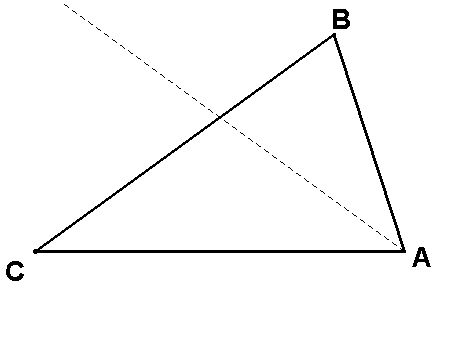 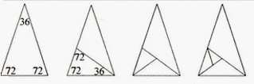
Złoty Prostokąt
Konstrukcję złotego prostokąta zaczynamy od narysowania kwadratu o boku "a". Teraz zaznaczamy środek boku "a". Zakreślamy łuk o środku w punkcie a/2 i promieniu r(równym odległości punktu a/2 od jednego z wierzchołków kwadratu nienależących do boku, na którym jest punkt a/2), tak aby łuk przeciął przedłużenie boku na prostej w której zawiera się ten bok. Odcinek "b" jest długością boku złotego prostokąta, którego szukamy.
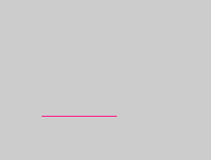
Sprawdzamy złotą proporcję:
Przjmujemy, że a=1.
Widzimy trójkąt prostokątny ra/2a, więc stosujemy twierdzenie Pitagorasa
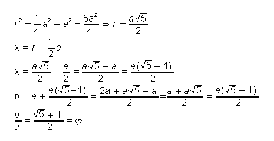
Właściwości Złotego Prostokąta
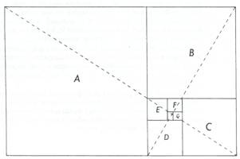 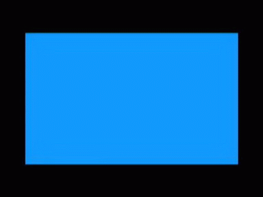
Właściwości złotego prostokąta:
Poprzednio zbudowaliśmy złoty prostokąt, a teraz odetniemy od niego kwadrat A-pozostała figura jest również złotym prostokątem. I znów od powstałego złotego prostokąta odcinamy kwadrat B-pozostała figura jest złotym prostokątem.I tak kolejno odcinamy kwadraty C,D,E,F,G, a powstałe w ten sposób figury są złotymi prostokątami. Zaskakującą właściwością jest to, że kreśląc przekątne tak jak na rysunku, stwierdzimy, że wszystkie zawsze będą prostopadłe i za każdym razem przetną się w tym samym punkcie.
Ta niewiarygodna właściwość przysługuje tylko złotemu prostokątowi, a punkt przecięcia jest swego rodzaju wirem, geometryczną czarną dziurą, punktem nieskończonego przyciągania, wokół którego skupia się nieskończona mnogość złotych prostokątów.
Spirala złotego prostokąta
Znany nam już złoty prostokąt, z którego odcinaliśmy kolejne kwadraty, posłuży nam teraz do wykonania krzywej, tzw. spirali logarytmicznej. Powstaje ona kiedy w każdym z wpisanych kwadratów narysujemy łuk okręgu w sposób pokazany na rysunku. Promień każdego łuku jest równy długości boku kwadratu, w którym łuk jes zawarty.
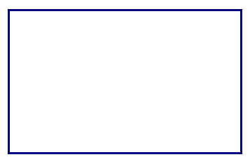
Złota spirala to szczególny przypadek spirali logarytmicznej, w której współczynnik b jest stałą zależną od φ (gdzie φ jest „złotą liczbą”). Cechą charakterystyczną złotej spirali jest to, że co 90° jej szerokość zwiększa się (lub zmniejsza) dokładnie φ razy.
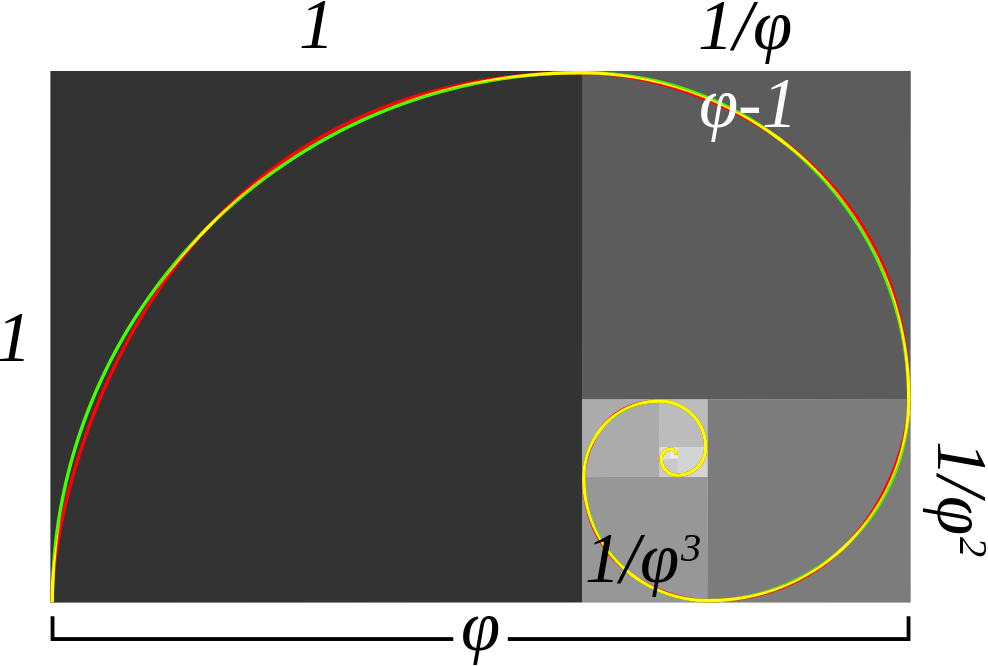
Przybliżona oraz dokładna złota spirala: zielona zielona spirala jest zbudowana z ćwiartek okręgów, natomiast czerwona spirala jest złotą spiralą. Pokrywające się fragmenty zaznaczono na żółto. Stosunki długości boków kolejnych kwadratów są równe φ.
Wzory
Ogólne wzory na spiralę logarytmiczną we współrzędnych biegunowych:
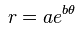
oraz
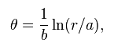
(gdzie e – podstawa logarytmu naturalnego) mają również zastosowanie w przypadku złotej spirali. W tym przypadku θ jest kątem prostym, b jest stałą rzeczywistą, zaś r/a=φ (gdzie φ jest „złotą liczbą”). Stąd mamy wzór:
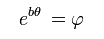
Wartość b wyraża się wzorem:
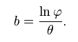
Wartość b może być dodatnia lub ujemna, w zależności od tego, w którą stronę skierowany jest kąt prosty θ. Wartość bezwzględna z b wynosi:
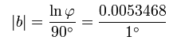
dla θ wyrażonego w stopniach;
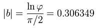dla θ wyrażonego w radianach.
Spirala złotego trójkąta
Kiedy rysowaliśmy kolejne dwusieczne złotego trójkąta, prowadziły one do powstawania coraz mniejszych złotych trójkątów wewnątrz wyjściowego trójkąta. Oznacza to w istocie odejmowanie złotego gnomonu (GNOMONEM-jest każda figura, która dodana do pierwotnej figury daje w wyniku figurę podobną do pierwotnej). Otrzymuje się wówczas spiralny ciąg kolejnych złotego trójkąta zbieżny do jednego punktu, analogicznie do tego, do którego zbieżny był ciąg złotego prostokąta.
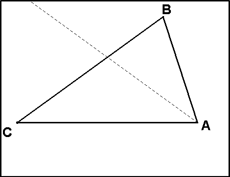
Ciekawostki
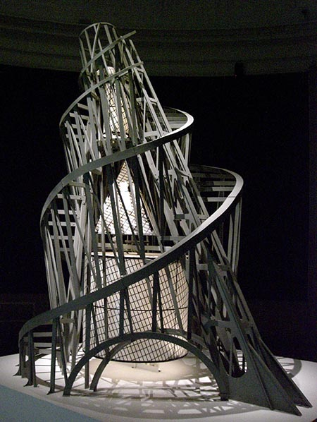
Pomnik Trzeciej Międzynarodówki, zaprojektowany przez Rosjanina Vladimira Tatlina nie został nigdy zrealizowany, jednak makiety pokazują wielką wieżę z żelaza, szkła i stali. Podwójna spirala z żelaza i stali miała otaczać trzy piętra pełne szklanych okien i obracające się z różnymi prędkościami. Pierwsze miało być sześcianem i obracać się raz w roku, drugie miało być piramidą obracającą się raz w miesiącu, a trzecie-walcem obracającym się raz dziennie.
Pomnik Modulora, wykonany zgodnie z idealnymi wymiarami proponowanymi przez Le Corbusiera w jego książce.Człowiek z podniesioną ręką mierzy 226 cm, a jego środek znajduje się w pępku (113 cm). Obie te liczby, mnożone lub dzielone przez φ, generują ciąg Fibonacciego | 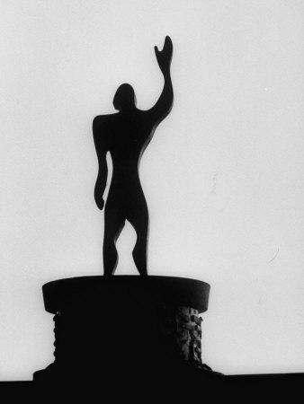 |
Konstrukcja złotego Cyrkla
Złoty cyrkiel jest prostym narzędziem, które można zbudować samodzielnie. Służy do rysowania odcinków pozostających w złotej proporcji lub do sprawdzania, czy dane dwa odcinki tę proporcję zachowują.
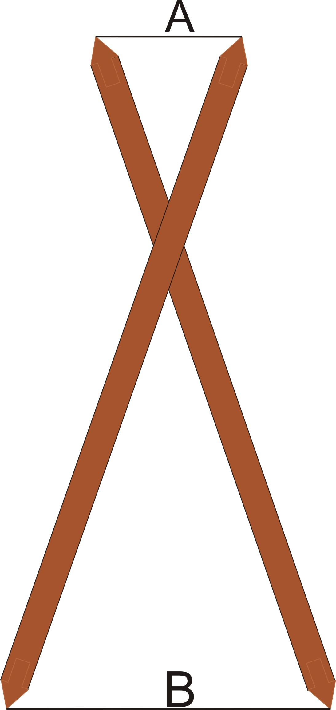 Pierwszy sposób:
Wycinamy dwa kartonowe, plastikowe lub drewniane paski zaostrzone na końcach, o szerokości 2cm i długości 34cm. W każdym z pasków wywiercamy dziurkę w odległości 13cm od końca paska i łączymy je przez owe dziurki (np. za pomocą pinezki), tak aby można było paski obracać. Poruszając paskami, otrzymujemy dwa trójkąty równoramienne o bokach długości 21 i 13cm, odpowiednio. Są to kolejne liczby w ciągu Fibonacciego, zatem ich stosunek jest bliski φ. Także stosunek odległości między końcami pasków z jednego i drugiego końca będzie równy φ.Cyrkla używa się bardzo łatwo-gdy chcemy sprawdzić, czy dwa odcinki są w złotej proporcji, wystarcza otworzyć jeden koniec cyrkla na szerokość równą krótszemu odcinkowi, po czym-nie zmieniając rozwarcia-przyłożyć drugi koniec cyrkla do większego odcinka. Jeśli długość odcinka jest równa odległości między ostrzami cyrkla, możęmy stwierdzić, że badane odcinki są w złotej proporcji. W podobny sposób możemy stwierdzić, czy dany prostokąt jest złoty. Wystarczy ustwić krótsze końce cyrkla na szerokość prostokąta, a jeśli rozwarcie na drugim końcu cyrkla jest równe dłuższemu bokowi prostokąta, mamy złoty prostokąt.
Drugi sposób:
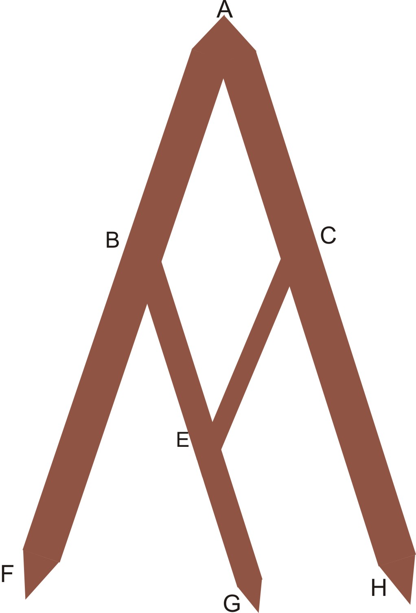 Potrzebujemy czterech pasków, o szerokości 1cm. Dwa powinny mieć długość 34 cm, jeden 21 cm, ostatni 13 cm. W każdym pasku wywiercamy 2 dziurki: pierwszą na końcu paska, drugą, jak poprzednią, w odległości 13 cm od tegoż końca. Paski łączymy tak jak na rysunku. Przy tej konstrukcji mamy następujące wymiary:
AF=AH=34 cm
BG=21 cm
AB=AC=BE=CE=13 cm
EG=8 cm
Wszystkie te długości wyrażąją się liczbami Fibonacciego. Gdy poruszymy cyrklem, stosunek odległości między końcówkami FG i GH pozostanie bardzo bliski φ. Po ustawieniu końcówek F i H na dowolnym odcinku (o długości do 68 cm) końcówka G wskaże punkt dzielący odcinek na dwie części o długościach M, m, takich że M/m=φ.
Zastosowanie
Matematyka to nauka, której nie można zamknąć w książkach i liczbach. Dział złotej matematyki spotykamy niemal na każdym kroku, chociaż często nie zdajemy sobie z tego sprawy:
|
-włączamy TV (kształt telewizora to właśnie często złoty prostokąt), 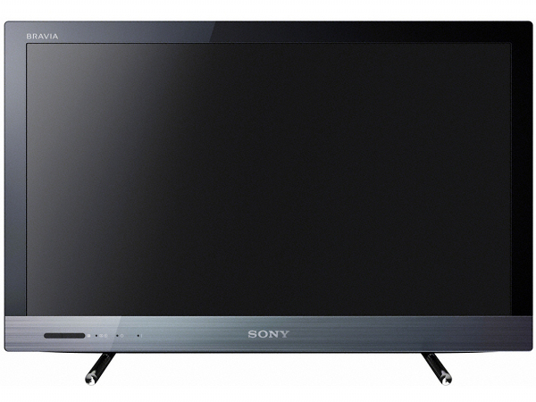 -podziwiamy architekturę miast (ściany budynków również często są złotymi prostokątami, zachowują proporcję o stosunku φ, a nawet budowane są spiralnie), |
Zastosowanie cdn
|
| ||
| -oglądamy wystawy obrazów, rzeźby, w których dostrzegamy złotą proporcję, |
|
-płacimy kartami (złote prostokąty), |
|
|
Zastosowanie cdn
| -otaczająca nas przyroda (złota proporcja w liściach np.wiązu górskiego, spiralny układ ziaren słonecznika), |

|
-budowa ludzkiego ciała,
Wszystkie te długości są wielokrotnościami jednej, zwanej linią (rownoważnik 2,247 mm). W tabelce podane są wymiary wyrażone w liniach i w centymetrach. Liczby linii są kolejnymi wyrazami ciągu Fibonacciego, a więc stosunek każdej z nich do poprzedniej jest równy φ, co jest zaskakujące, bo źródłem jednostek były rozmiary ludzkiego ciała.
Zastosowanie cdn
-większość boisk piłki nożnej ma kształt złotego prostokąta (niemal dokładnie takim jest stadion Realu Madryt z modułem 1,606),
-wielu grafików komiksowych używają liczby φ do ustalenia punktu ogniskowego,
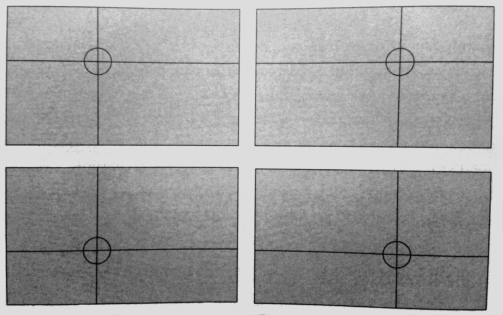
Taki sposób podziału płaszczyzny obrazka można dostrzec w pracach wielu rysowników.
Zadania
Zad.1
| Wykaż, że stosunek dłuższego boku małego prostokąta do jego krótszego boku jest złotą liczbą. |
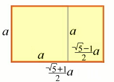
Rozwiązanie:
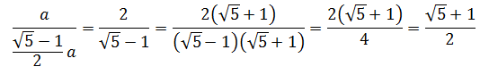
Zad.2
|
Pokaż, że odwrotność złotej liczby jest mniejsza od złotej liczby, dokładnie o 1? |
Rozwiązanie:
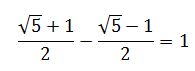
Zatem
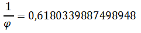
Zad.3
|
Sprawdź czy jesteś Złoty/Złota. |
Zakończenie
Słynny lutnik Antonio Stradivarius przywiązywał wielką wagę do rozmieszczenia otworów w skrzypcach zgodnie ze złotą proporcją. Znani malarze (np:Leonardo Da Vinci) świadomie lub nie, zachowywali złotą proporcję w swoich dziełach. Andrea Palladio w swoim dziele "Cztery księgi o architekturze " pisał, że proporcja głosów jest harmonią dla uszu, a proporcja wymiarów jest harmonią dla oczu.
Dodał też: "Harmonie... są przyjemne, nawet jeśli nikt, wyjąwszy tych, którzy wnikają w przyczyny rzeczy, nie wie dlaczego".
Dziękuję za uwagę i mam nadzieję, że wykazałem, iż piękno złotej matematyki znajdziemy w kulturze, sztuce, architekturze, muzyce, otacza nas ona na każdym kroku i w każdej dziedzinie życia, czy zdajemy sobie z tego sprawę czy też zupełnie tego nie zauważamy. Bądźmy więc spostrzegawczy, wnikliwi i ciekawi świata, bo kryje on jeszcze wiele niezwykłych tajemnic.
"Zmysły radują się na widok rzeczy o właściwych proporcjach" Św. Tomasz z Akwinu
Dziękuję i pozdrawiam
Konrad Szlagor
Przypisy
Strona została stworzona na potrzeby konkursu "Zobaczyć Matematykę".
Wszystkie materiały na stronie są ogólnodostępne w internecie, lub zostały stworzone przeze mnie.
Oprogramowanie wykorzystane przy tworzeniu treści jest w pełni niekomercyjne.
Programy:
-Notepad++
-GIMP,
|
Strona oparta została na skryptach Jquery, JavaScript, HTML5, ScrollPath oraz na CSS3. Bibliografia: "Złota proporcja" Fernando Corbalan |